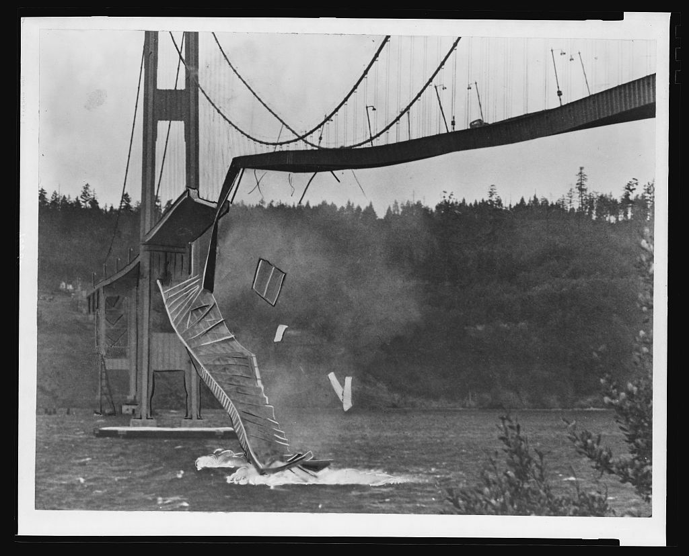
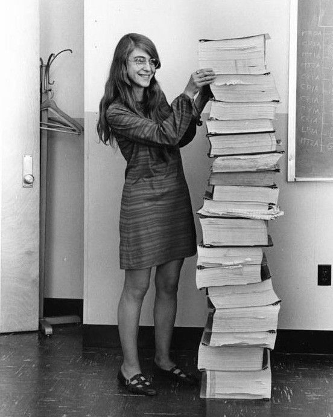

Software Engineering · Week 1
Welcome!
Settle in and check that you can reach today’s session materials.
Software Engineering·Week 01·Arrival
Software Engineering · Week 1
Settle in and check that you can reach today’s session materials.
§1.1, pp. 19-24. Printed pages in Sommerville (2016), 10th edition, Global Edition. See the session 1 reading guide for the study question and optional selections.
Making sure everyone can reach today’s materials before the session starts.
Say something if you cannot open the session materials, or if you need a different seat or format.
Make sure everyone can access and use the materials before beginning.
Good morning, and welcome to Software Engineering. Before we start, let's make sure everyone can use today's materials. If you cannot open a file, read what is on the screen, or work comfortably from your seat, please tell me now so we can sort that out. [Pause]
[Name and show the confirmed materials location; keep Release 2 inaccessible.] You will receive the material in stages today. You only need what I make available at each step. If the main route does not work for you, I have a fallback we can use.
We will begin with your own view of what software engineering means. Then we will look at a small example together, before you make a judgement from a packet of evidence. You do not need to arrive with the right terminology. What matters is being willing to explain what you think and what supports it. [Pause for access and seating needs.]
Once everyone is settled, we will start with one sentence in your own words.
We will use the prepared fallback so you can take part. [Provide the prepared alternative; do not promise an untested Canvas route.]
Your turn5 min · write on your own
Your starting point
Write one sentence. Keep it exactly as written. Do not correct it later.
Your own working definition, in your own words. This is not a test of prior knowledge, and there is no official sentence to reproduce.
You will come back to this sentence at the end of the session and add what today’s evidence changes. Both versions stay: the change is the point.
“I am not sure there is a difference” is a legitimate starting position. Write it down.
Keep an honest starting point that students can revisit later.
In your own words, what is the difference between programming and software engineering? Write one sentence. This is your starting position, so please work on your own for now. [Pause]
You do not need a formal definition. If your answer is that you are not sure there is a difference, write that. I would rather have your actual starting point than a sentence that sounds impressive but means very little to you.
Keep this sentence somewhere you can find it again. At the end of the session you will return to it and add what today's work makes you change or notice. Both versions will stay visible. We are interested in how your reasoning develops. [Pause for individual writing; do not sample or correct answers.]
Keep that first sentence as it is. I want to give you four short historical moments to help us think about the wider work of engineering.
Explanation
1771 · London
Seven civil engineers meet in a tavern. Individual experience becomes shared practice.
Engineering knowledge should outlive its author.
John Smeaton and six colleagues began meeting regularly to exchange what they had each learned in practice, rather than keeping it to themselves.
Your own experience is valuable. Engineering also needs knowledge that other people can examine and use.
One British professional milestone, not the birth of engineering worldwide. Dates are context, not something to memorise.
Engineering knowledge becomes more useful when others can examine and reuse it.
In 1771, John Smeaton and six other civil engineers began meeting in London to exchange what they had learned in practice. I want to start here because engineering depends on people making their experience available to others.
If I discover something useful but it stays in my head, [Pause] its value depends on me being there. Once I explain what I did and why, someone else can question it, learn from it, and use it in their own work.
This is one British professional milestone, not the beginning of engineering worldwide. The useful idea for us is that engineering knowledge should outlive its author.
But shared knowledge also needs to change when reality exposes its limits.
Explanation
1940 · Tacoma Narrows
The bridge’s behaviour exposed limits in the understanding of wind and structure.

A model can miss something important about real operating conditions. Engineering knowledge carries the memory of previous failures, and turns it into better designs and better checks.
This is not simply forced resonance, and wind-tunnel investigation had already begun before the collapse. No individual “forgot to calculate”.
Original photograph · WSDOT: lessons from failure
A model is useful only within the conditions it can account for.
[Pause] This is the Tacoma Narrows bridge in 1940. The important point for today is that the interaction between wind and the structure exposed limits in the understanding available. A design exists in a real environment, and that environment can reveal behaviour our model has not adequately accounted for.
It would be convenient to say that someone simply forgot a calculation. That is not a useful account of this event. Wind-tunnel investigation had already begun before the collapse, and calling it simply forced resonance also misses the point. We do not need the detailed mechanics for this lesson.
[Pause] When we test a system, we choose conditions: perhaps one user, one device, or one kind of connection. A successful result tells us something about those conditions. We still need to judge how far that result supports a claim about the conditions people will actually encounter.
Engineering learns from failures by improving both its designs and the checks it uses to judge them.
As software systems grew, those questions became a shared professional concern too.
Explanation
1968 · NATO conference, Garmisch
Larger systems brought problems of coordination, reliability, delivery, and maintenance.
“Software engineering” gave those problems a name and a forum.
Getting code to run is still essential. Once other people depend on a system, several developers change it, and someone else supports it, running correctly no longer settles whether the whole system serves those people.
A landmark conference, not the first software project or a single moment of invention. Programming remains essential engineering work.
1968 NATO conference report (optional reading).
Getting code to run is essential; coordinating a dependable system requires wider work.
The 1968 NATO conference was a landmark in bringing software engineering problems into a shared professional discussion. Larger systems brought questions about coordination, reliability, delivery, and maintenance. This was not the first software project or a single moment when someone invented the whole discipline.
Suppose you write a program and understand every part of it. Now other developers begin changing it. [Pause] People depend on it for their work. [Pause] Someone else has to support it when you are unavailable. [Pause] The code still matters enormously, but there are now decisions that no individual piece of code can settle on its own.
What are we agreeing to deliver? How will different changes fit together? What evidence would give us confidence? How will the next person understand why something works this way? These questions affect whether the system can continue serving people over time.
Software engineering gives us a way to take responsibility for that wider work while still taking the code seriously.
Apollo gives us a concrete example of preparing a system for difficult operating conditions.
Explanation
1969 · Apollo
Under overload, tested recovery mechanisms kept critical guidance work going.

Confidence came from designed behaviour, from testing, and from people who could interpret what was happening. Engineering includes preparing for conditions that are less than ideal.
The photograph shows listings of software developed by Margaret Hamilton and her team. She did not write every listing, and no single person saved the landing. You do not need to recall alarm numbers or scheduler detail.
NASA: photograph and team attribution · NASA: alarms and tested restart capability
Dependability includes preparing useful behaviour for conditions that are less than ideal.
This is Margaret Hamilton beside listings of Apollo flight software developed by her and her team. It is a striking image, but the stack is not a measure of quality, and it does not mean she wrote every line herself. It helps us see that this was substantial, coordinated work.
[Pause] During the Apollo landing, overload occurred. Tested recovery mechanisms allowed critical guidance work to keep going. The point I want you to take away is that confidence did not depend on assuming that every operating condition would be perfect.
It is easy to ask whether a system works when everything goes as expected. A further question is what happens when it cannot do everything being asked of it. Which work matters most? [Pause] What behaviour can it preserve? [Pause] How will people understand what is happening well enough to respond? [Pause] Those questions influence design and testing before a difficult situation occurs.
The recovery mechanisms mattered, the testing mattered, and people who could interpret the situation mattered. No single person saved the landing. We do not need alarm numbers or scheduler details to understand that connection.
Our systems will be much smaller, but we can still ask what conditions we have prepared for, and what evidence supports our confidence.
These examples bring us to the distinction between programming and software engineering.
Explanation
A useful distinction
Expresses behaviour in code.
Coordinates the wider work needed to make that behaviour useful, dependable, changeable, and supportable.
The distinction is about scope, not status.
Not a ranking, and not a list of job titles. Programming is essential technical work inside software engineering.
Someone must understand whose problem is being solved, agree what success means, integrate changes, test important conditions, support users, and change the system later.
Programming is essential work within the wider scope of software engineering.
On this slide, programming means expressing behaviour in code. Software engineering includes the wider work that makes that behaviour useful, dependable, changeable, and supportable. This is a distinction about scope, not status. It is not a ranking of people or a division into impressive and less impressive job titles.
Imagine a feature that lets someone reserve a place at an event. Writing the code that records a reservation is essential. But first we need to understand whose problem we are solving and what a successful reservation means. The person booking and the person running the event both need the system to support their work.
We also need to agree the expected behaviour, bring changes together, and test important conditions. Once people use the system, someone must help when they have a problem. Later, a different developer may need to change it. That person needs enough understanding to make the change with confidence.
These concerns influence the code, and what we learn from the code can make us revisit earlier decisions. They belong together. Programming remains essential technical work inside that wider responsibility.
[Pause] We will practise explaining those connections: why a decision makes sense, what supports it, and what still needs checking. You do not need to master every part today.
That is the promise of this course: learning to make and justify connected software decisions.
Explanation
What this course practises
Use evidence. State uncertainty. Explain trade-offs. Revise when the situation changes.
The artefacts you produce are evidence of your reasoning. The goal is not to collect templates. It is to make decisions another person can inspect, question, and improve.
You will apply ideas to new contexts and justify your choices. You are not expected to design an expert-level replacement architecture.
Make decisions and their supporting reasoning visible to another person.
The promise of this course is that you will learn to make software decisions visible and defensible. By visible, I mean that another person can see what you decided and how you reached it. By defensible, I mean that you can explain why it makes sense given the evidence and constraints you had. [Pause]
There are four things we will keep practising. Use evidence: show what supports a claim. State uncertainty: make clear what you still do not know. Explain trade-offs: say what a choice gains and what it gives up. And revise when the situation changes: let new evidence affect your judgement.
You will produce things such as written explanations, reviews, and small engineering artefacts. Their value is in the reasoning they make available to someone else. A beautifully completed template can still leave the important decision unexplained. A short, clear account can give a colleague something useful to question and improve.
You are not expected to arrive as an expert architect or produce a replacement design for every system we discuss. You are expected to make a proportionate choice and justify it. If your view changes, you should be able to explain what changed it. That is a capability we can practise, rather than a quality you either already have or do not have.
Here is the map we will use to locate those decisions across the course.
Explanation
A map, not a checklist
A decision in one place changes what is needed elsewhere. This is where we will locate our reasoning, all term.
This locates the decisions we will practise across the course. It is not a fixed sequence you must follow, and not a list to memorise today.
For example: if we describe success too narrowly, we may test too narrowly and miss an important risk. Today we look at one part of that connection: what our evidence allows us to claim.
Use the map to notice connections between decisions, not to memorise eight labels.
This map brings together the areas of work we will connect during the course: problem, stakeholders, requirements, design, implementation quality, testing, maintenance, and risk. You do not need to memorise these labels today. We will return to them when there is a decision that makes the connection useful. [Pause to look at the map.]
Imagine that we describe the purpose of a reservation feature as recording a booking. That description shapes what we ask the system to do. It also shapes what we check: we might make a booking and see whether a record appears. The check may be useful, but its usefulness depends on whether we have described success well enough.
The people using the system may need more than a record. They need to understand what has been agreed and what they can rely on. If we leave an important need out of our description, we can build and test exactly what we described while still leaving that need unsupported. An early decision affects the evidence we collect later.
The connections also work back in the other direction. A test result might make us reconsider a design. A support problem might show that we misunderstood what someone needed. This is why the map is not a fixed sequence that you complete once and never revisit. [Pause]
It also helps us explain a decision to someone else. Instead of simply saying that we chose a design because it seemed sensible, we can connect it to a requirement, a person's need, or a risk we were trying to manage. That makes the choice easier to inspect.
For today, we will concentrate on one small connection: what our evidence allows us to claim. The rest of the map gives that question a home. We will build up the other connections as the course progresses.
The assessments follow that same progression from making a judgement to explaining how your reasoning connects.
Explanation
The assessed journey
Two individual in-class tasks: Software Project Framing in Week 5 and Engineering Review in Week 10, each worth 10%. The 3,200-word Software Engineering Portfolio is worth 80%.
You will practise the capabilities each task needs the week before you sit it. The detail of each task is unpacked when it becomes useful, not today.
Ask about anything here. Where a date, policy, or Canvas detail is not yet confirmed, it will be verified rather than guessed.
The assessment journey moves from framing to reviewing to connected reasoning.
There are three parts to the assessed journey. The first is Software Project Framing, an individual in-class task in Week 5, worth 10%. The second is Engineering Review, another individual in-class task in Week 10, also worth 10%. The Software Engineering Portfolio is 3,200 words and worth 80%. [Pause]
The words along the top tell you how those parts connect. First, you frame a software project: you make sense of an ambiguous situation and explain what matters. Later, you review an engineering proposal: you examine decisions and explain how well they are supported. The portfolio asks you to connect your engineering reasoning across the wider work of the course.
That progression is why we will spend class time explaining decisions, examining evidence, and revising our work. Those activities practise capabilities you will need in assessment. We will unpack the detail of each task when it becomes useful, rather than trying to carry every instruction in our heads today.
You will have practice for each in-class task in the preceding week. Use that practice to notice where your reasoning is clear and where another person still has to guess what you mean. The assessment briefs remain the place for the exact requirements; this slide is the overview. [Pause]
Is there anything about this overall structure that you would like me to clarify before we move on? [Pause for questions.]
Keep that progression in mind. Let us bring the wider idea of software engineering into one working sentence.
I need to verify that detail before giving you an answer. I will record the question and return to it once it is confirmed.
Explanation
A working definition
This is a concise formulation we can test against evidence. You do not need to replace your own sentence with it, and you will not be asked to reproduce it.
“With other people, under real constraints.” That is the bridge from scale and coordination to the evidence work that follows.
Use the working definition to connect responsibility, constraints, and evidence.
Here is a working formulation we can use today. Programming expresses behaviour in code. Software engineering coordinates the wider work needed to make it useful, dependable, changeable, and supportable: with other people, under real constraints. [Pause to read the slide.]
You do not need to replace your own opening sentence with this one. Keep yours. This is something we can test against the work we do, rather than a definition you will be asked to reproduce. Its value is in what it helps us notice.
The phrase I want to hold on to is with other people, under real constraints. When someone else depends on a system, a statement about its readiness can influence what they do next. A colleague might release it, a user might rely on it, or someone supporting it might need to explain its limitations. The way we describe what we know has consequences.
Real constraints also mean that we cannot settle every possible question before making any decision. Time is limited, evidence is incomplete, and different people may need different things. We still have to choose what to do next. The useful skill is to make a judgement whose confidence and scope match what we actually know. [Pause]
That is why stating an uncertainty is useful engineering work. It tells the team where a decision still depends on an assumption, and where another check could make a difference. It does not mean that nothing can be decided until every uncertainty disappears.
We can start practising this with a very small piece of evidence. We will look at what a colleague observed, the claim they made from it, and how far that claim can reasonably go. You already have enough everyday reasoning to take part; the terminology can come afterwards.
Imagine you are part of a software team, checking a colleague’s recommendation about a password-reset feature.
Explanation
One demonstration
You are on a software team. A colleague has just tried the password-reset feature and is recommending that it is ready. This sentence is all the evidence you have.
One test account. One email arrived. Nothing here tells you whether the link worked.
Not to find a hidden bug. Only to check how far this claim can reasonably go.
Give students the teammate role and the exact evidence before asking for judgement.
You are on a software team. A colleague has tried the password-reset feature and is recommending that it is ready. You are helping the team decide what that recommendation is supported by. This is not an exercise in catching a colleague out. It is part of making a decision together.
Here is the whole statement: “The password-reset email arrived in the instructor's test account, so password reset is ready.” [Pause for everyone to read the full sentence; then reveal the emphasis cue.]
That sentence is all the evidence you have. Please do not add an imagined test report or assume that someone must have checked the rest. Equally, do not assume the feature is broken. Your job is to reason from what has actually been supplied.
The word “ready” matters because another person could act on it. Before the team relies on that word, it needs to understand what the demonstration tells us and what remains open. You can respect the colleague's work while still checking the scope of the recommendation. [Pause]
We will take this one step at a time. Start with the evidence in the sentence, then consider the claim being made from it. You do not need to name a technical defect, design a new test suite, or know how the feature is implemented.
What does that evidence establish, and what important thing does it not establish?
Your turnthink first, then offer one answer
“The password-reset email arrived in the instructor’s test account, so password reset is ready.”
Evidence before terminology
Think first. Then offer one bounded answer.
You do not need to invent a defect. “This might be broken” is a guess; “we do not know whether this holds for other providers” is an unknown. The second is what is wanted.
The question asks you to separate what was observed from what would still need evidence. Quiet thinking time is part of the task.
Hear one bounded observation and one important unknown before modelling the distinction.
Take a quiet moment to separate what happened from what is being claimed. Look at the exact words, including the conditions under which the demonstration happened. [Pause for individual thinking.]
Who can offer one bounded answer: what does the evidence establish, or what important thing does it not establish? [Listen to two or three answers; allow thinking time between them.]
Let us make the boundary between the observation and the wider claim explicit.
Look just at the sentence. Which words tell us what happened, and for whom? [Pause for a response.]
That is a possible explanation, but what evidence establishes it here? Could you express it as something we still do not know? [Pause]
Can you make “it works” more precise? What exactly did the demonstration show? [Pause]
[Move on once there is one observation and one useful unknown. The 16-minute allocation includes flexible thinking/access margin; carry unused margin forward rather than adding questions.]
Explanation
“The password-reset email arrived in the instructor’s test account, so password reset is ready.”
A bounded claim
The demonstrated account received an email under the stated test condition.
Whether intended users can recover access reliably, in realistic contexts, including when something goes wrong.
A passing demonstration is evidence that the demonstrated path worked under the stated conditions. It is not proof that the system is ready for intended users in realistic conditions.
It established something real for one path. Bounded evidence is still evidence.
An email arriving is real evidence, but its scope does not establish complete account recovery.
[Briefly restate one observation and one unknown actually heard. If no usable response was given, say: “Let me model one way to make this distinction.”]
Let us separate what is established from what remains unknown. The observation supplied is that an email arrived in the instructor's test account. That is a real result. It gives us a bounded statement we can make with confidence. [Pause]
Now compare that with “password reset is ready”. A person using password reset is trying to recover access to an account. The sentence does not tell us whether the link worked, whether the person could complete the process, or whether the feature would serve intended users in their conditions. Those are unanswered questions, not defects we have discovered.
Notice that we have not thrown the demonstration away. There is a difference between saying “this establishes nothing” and saying “this establishes something narrower than the claim”. The email arriving is useful evidence. We lose precision if we dismiss it, just as we lose precision if we let it stand for the whole recovery process.
The next move depends on the decision the team needs to make. If it wants to claim that an email reached this test account, the observation supports that. If it wants to claim that users can recover access, it needs evidence about that wider outcome. The size of the claim changes the evidence required. [Pause]
Other assumptions might concern timely delivery, intended users being able to use the link, or support when something goes wrong. We have not observed those conditions here. We should name them as assumptions or unknowns rather than quietly treating them as established.
A useful team statement therefore keeps both parts visible: what passed, and what still needs checking. It gives another person a sounder basis for choosing the next check or deciding how far to rely on the result.
There are two useful terms for the questions we have just separated.
Explanation
“The password-reset email arrived in the instructor’s test account, so password reset is ready.”
Same evidence, two questions
Did the demonstrated behaviour match the stated condition?
Can intended users reliably achieve the intended outcome in realistic conditions?
Meeting a stated condition and meeting the user’s real need are related, but not identical.
Two labels for two useful questions you have already been asking. You are not being asked to reproduce definitions today.
An email arriving in the test account supports the stated condition. That is verification evidence. Whether an intended user can actually recover access is the validation question, and it remains unanswered.
This example introduces the two questions. It does not mean verification is always a small test, or validation is simply more tests.
Verification concerns stated conditions; validation concerns intended use and needs.
We can now name two questions that sit behind the distinction. Verification asks whether something meets the stated requirements or conditions. Validation asks whether it serves the intended use and the needs of the people who will rely on it. [Pause]
In our example, an email arriving in the test account gives us evidence about a stated condition: the message reached that account. That is verification evidence for that condition. It does not establish that every requirement for the feature has been met, because we have not been given evidence about every requirement.
The validation question is whether an intended user can actually recover access. To answer it, we would need evidence that addresses that outcome and its relevant conditions. The observation in our sentence does not answer it, even though it is part of something that could support the wider judgement.
The distinction is about the question the evidence addresses. It is not a rule that verification means a tiny test and validation means a large number of tests. Collecting more results only helps if those results address what we need to know. Repeating the same narrow check does not automatically answer a different question. [Pause]
This also helps us communicate within a team. If someone says that a feature has been checked, we can ask what was checked and what conclusion that supports. We may discover that the team agrees about the result but has been using it to answer different questions.
For today, you do not need to reproduce definitions. Keep the practical habit: what condition did this evidence establish, and does that settle the intended use? If it does not, state the remaining question clearly. That gives the team something concrete to investigate rather than a vague feeling of confidence or doubt.
We can carry that into the activity as one simple habit: keep a claim no larger than its evidence.
Explanation
What we just did
If a team calls the whole feature ready, someone may release it. If it states precisely what passed and what remains unknown, the team can choose the next check or limit the release.
This is the move you will use on the Campus Event material for the rest of the session.
State an observation, an important unknown, and a proportionate claim.
There are three parts to the move we just made. First, state an observation, something the evidence actually records. Second, identify an important unknown, something relevant that has not been established. Third, make a claim proportionate to the evidence. [Pause]
In the password-reset example, “an email arrived in this account” is an observation. Whether intended users can complete recovery remains unknown. The team can report the observation confidently while keeping the wider readiness judgement open.
That precision matters because words such as “ready” can lead to action. Someone might release the feature or tell other people they can rely on it. If the statement hides an assumption, the next person may not realise that a useful check is still missing.
A bounded statement gives the team more room to act responsibly. It can decide what to check next, what limitation to make explicit, or how far the available evidence supports the immediate decision. Being precise is useful even when the evidence is incomplete. [Pause]
You will now use that same move on Campus Event. There will be more material than one sentence, and you may reach different judgements. The task is to make the link between the evidence and your own judgement visible. We will keep your first position so that you can inspect how your reasoning develops.
Let us form teams and get the first packet and revision sheet in front of everyone.
Explanation
Release 1 begins now
Individual judgement first. Team evidence check second.
Campus Event Release 1 and the evidence revision sheet.
Read independently. Write one readiness claim and one important uncertainty in your own words. Keep them unchanged. When time is called, your team agrees on one supporting packet fact and one uncertainty.
There is an individual route for every team step. Say so and it will be arranged.
Set up teams, distribute only Release 1, and explain the immediate individual task.
Please form your teams. You will each need Campus Event Release 1 and the evidence revision sheet. [Distribute only those materials and confirm access.]
You will begin by reading and writing independently. Write one readiness claim in your own words, and one important uncertainty. Keep those statements as you wrote them. When I call time, your team will check one supporting packet fact and one uncertainty together.
You do not need to agree on one individual judgement. The first record belongs to each of you. The team step comes afterwards and helps check what the evidence actually says. [Pause]
If you are working alone, there is an individual route for the team steps. Let me know so we can arrange it. For now, everyone begins with the same independent reading and writing.
Open Release 1. Read the packet before deciding what you can reasonably claim.
Your turn20 min · on your own, in silence
Protected individual work
One readiness claim. One important uncertainty. Keep the original wording.
One claim about what the available evidence justifies concluding about launch readiness, and one thing that genuinely remains unknown to you. Use your own words.
A cautious, a confident, or a sceptical claim can all be defensible. You are not being marked on predicting what comes next.
Vocabulary or how the task works: immediately. Not with what the evidence means; that is the work.
Protect the individual reading and writing window without suggesting a verdict.
Read the packet and record one claim about launch readiness that you can justify from it. Then write one important thing that remains unknown. Use your own words and make the link to the evidence as clear as you can.
A cautious, confident, or sceptical claim can be defensible. You are not trying to predict what I will reveal later. You are making a judgement from the evidence available now. [Pause]
If vocabulary or access is stopping you, ask straight away. If you are unsure what to conclude, return to the packet and ask what it supports. That judgement is the work I want you to do. Begin on your own; I will call the team check afterwards. [Protect the 20-minute individual reading and writing window; circulate quietly.]
Keep your original statements. We are now going to check one fact and one uncertainty with your team.
Where is that supported in the packet? [Pause for the student to locate it.] What still remains unknown to you?
Your turn7 min · in your team
Compare evidence, not predictions
Your individual claim stays unchanged.
You are not asked to predict failure, to reach one class verdict, or to present. Your individual statements stay as written and are not merged.
Check evidence together while preserving every individual judgement.
Compare your work and agree on one supporting fact from Release 1 and one uncertainty. Check that the fact is actually recorded in the packet. Check that the uncertainty is genuinely unresolved, rather than a defect you have assumed.
Your individual statements stay as written. Do not merge them into a new group answer. You are checking the evidence together, and you may still have different judgements about what it supports. [Pause]
You do not need to predict a failure or prepare a presentation. Keep this small: one fact you can point to and one thing the packet has not settled. [Allow the team check; check that individual records remain visible.]
Finish the check and keep the first record unchanged. We are about to pause the evidence before the break.
Could you give us one packet fact and one uncertainty, without a full report? [Sample at most two or three teams.]
Pause3 min
Freeze the record
Coffee adds conversation, not new packet evidence.
Your first claim stays unchanged. You may naturally talk during the break, but no new packet evidence arrives during it.
New evidence will be released, and you will decide whether it changes, qualifies, or reinforces your judgement.
A cautious claim may be sharpened rather than reversed. The learning move is evidence-linked revision, not being caught out.
Freeze the first record and keep Release 2 unavailable until after the break.
Before we break, please check that your first claim and uncertainty are still visible and unchanged. If you have been discussing alternatives, keep those separate from the original statement. We need to be able to see what you thought when Release 1 was the evidence available. [Pause while students check.]
After the break, you will receive new evidence and decide whether it changes, qualifies, or reinforces your judgement. You may find that you want to reverse a claim, or simply make it more precise. There is no required direction of change.
This is not a trap in which the aim is to catch your first answer being wrong. We are practising making a reasonable judgement at one point and then responding to what becomes known later.
You can naturally talk during the break. That conversation is not new packet evidence, and Release 2 will remain unavailable until we return. Keep the original record so that the later comparison remains useful. [Confirm preservation before releasing the class.]
Keep your revision sheet with you. We will return at 16:30 for the next evidence release.
Pause30 min · 16:00 – 16:30
The evidence gate
Release 1 is preserved. Release 2 remains unavailable.
Your revision sheet, with your initial claim and uncertainty on it.
Block 2 starts with Release 2. Nothing is required of you during the break.
Protect the break and preserve the staged evidence.
We are taking the break now. Please keep your revision sheet, including your original claim and uncertainty. We will start again at 16:30 with Release 2. Nothing is required of you during the break. [Keep Release 2 inaccessible; allow the institutional break.]
Explanation
Your first position remains visible
Do not overwrite Release 1. Add the revision beside it.
Your Release 1 position is part of the evidence of your reasoning. Preserving an initial judgement and revising it proportionately when the evidence changes is the skill being practised.
Preserve the original judgement before distributing Release 2.
Welcome back. Please have your revision sheet in front of you, with your original claim and uncertainty still visible. We are going to add to that record, not replace it. [Pause while students settle.]
Your first position shows what you concluded from Release 1. New evidence may give you a reason to change, narrow, strengthen, or qualify it. The useful thing is to show which evidence affects which part of your judgement.
I am now making Release 2 available. Keep it separate from the first packet so you can see what became available at each stage. [Distribute Release 2; use the prepared fallback if necessary.]
Begin by reading the new evidence on your own, before discussing it.
You need a chance to make your own first judgement from Release 1 before seeing the new evidence. I will arrange that first step with you. [Use the protected Release 1 route before providing Release 2; do not ask the student to copy a neighbour.]
Your turn15 min · read before discussing
Protected reading
Notice what the packet records, what someone claims, and what is not established.
Discussion after reading, not during it.
What the packet records; what someone in the packet claims; and what nobody has established. Keeping them apart is most of the work.
In your own reasoning, keep visible what you can trace directly to the packet and what you are adding as an inference. An unknown is not itself an inference; it is something the packet leaves open.
The packet records outcomes, not one technical cause. If you find yourself naming a mechanism, ask what the packet establishes and what is still your hypothesis.
Separate recorded observations, claims, and unknowns before inferring causes.
Read Release 2 on your own first, and read all of it before you write anything. It is short. As you read, keep three things separate: what the packet records, what someone in the packet claims, and what nobody has established. [Pause]
Those categories may be close together in the text, but they do different work in your reasoning. A person's explanation can be worth considering without already being an established fact.
If you find yourself naming a technical cause, ask what evidence establishes that mechanism. The packet records outcomes. A plausible explanation for them is still a hypothesis unless the supplied evidence supports that further claim.
When you begin your own reasoning, carry one boundary forward: what you can trace directly to the packet, against what you are adding as an inference. Keep what remains unknown visible too.
Read before discussing, and keep track of the evidence that might affect your original judgement. [Allow the reading window; clarify vocabulary and access without supplying a diagnosis.]
Fifteen minutes is the current accessibility and interpretation envelope, not a target students must fill. If the room is visibly ready sooner, begin the individual revision and carry the saved time forward. Record the actual timing after class before changing the schedule permanently.
Now use the new evidence to revise your own judgement, keeping the original beside it.
That could be a hypothesis. Which packet evidence establishes that cause? If the packet does not settle it, how could you label it so a reader sees that it remains an inference? [Pause]
Your turn15 min · on your own
Revise beside the original
Add what the new evidence changes or qualifies, your revised claim, and one thing that remains unknown.
Your revision may reverse, narrow, strengthen, or qualify your first judgement. What matters is a visible link to specific evidence, not a particular verdict.
Make the revision traceable to new evidence without forcing a reversal.
Keep your original statement where it is. Add what the new evidence changes or qualifies, your revised claim, and one thing that still remains unknown.
Say this plainly, because the staged release makes students assume they were meant to be wrong: I am not looking for a U-turn. If part of your first claim still holds, show that.
Your judgement may reverse, narrow, become stronger, or gain a qualification. What matters is that another person can see the specific evidence and the effect it has on your reasoning. You do not get a better answer simply by changing your mind more dramatically. [Pause]
If part of your first statement still holds, make that visible too. We are building a record of a judgement developing, rather than hiding the first version behind a better-looking final answer. Work individually on your revision now. [Allow individual writing; circulate without steering toward reversal.]
Keep both versions. Any direction is a real revision: narrowing or qualifying counts, and I am not looking for a U-turn. Next, your team will make one connection in the reasoning easy for someone else to inspect.
Which new evidence affects this claim? How does it change, qualify, strengthen, or narrow what you wrote before? [Pause]
Which line made you drop the first claim entirely? If none did, what part of it still holds?
Your turn15 min · one row per team
Make the judgement inspectable
One row. Point at what the packet records, then label what you infer.
A worked example from the password-reset claim. It is not the Campus Event answer.
Software teams need reasoning that other people can inspect, question, and revise. Your row shows which packet evidence informed a decision or assumption, what consequence the packet records, and what evidence should come next.
Ninety seconds each: name the one piece of new evidence you used. Then choose one to build on. Not the best one, just one every member can point to in the packet. Write the row together from there.
Use what the packet records. Label anything you infer as an inference. Do not invent a mechanism the packet does not record.
Start from one thing the packet records, then ask what decision or assumption it informed.
Make one evidence-to-decision connection inspectable without inventing a root cause.
Hand each team one A3 sheet or flipchart page for the strip that will be posted. An A4 worksheet cannot be read from across the room, and the stacked fields on the revision sheet are the team's draft, not the posted version. Students keep their opening sheets for the individual exit revision.
Your team will now make a short row of reasoning, a causal strip. Here is the reason for the shape: another team is going to read this row and try to disagree with it. Make that possible. It is not a request to diagnose the technical root cause. [Pause]
[Let the room read the task first, then press E and point at the worked row.] This example uses the password-reset claim, not Campus Event, so you can see the size of each field without being given today's answer. Notice that the second field is explicitly labelled as an inference and the third repeats the readiness consequence recorded in the original claim.
The move is the same one you have used all afternoon. Point at a line in the packet, then say what you are adding to it. Use the four fields to connect what the packet records, a decision or assumption, the consequence the packet records, and what evidence should come next.
Label an inference as an inference. If the packet records an outcome but does not establish the mechanism that produced it, your strip should preserve that boundary.
Before you write, take ninety seconds each: name the one piece of new evidence you used. Then pick one to build on. Not the best one, just one you can all point to. [Allow teams to build the strip; circulate.]
We will now ask a neighbouring team to check the evidence in your strip.
Where is that evidence in the packet? [Pause] Is this a consequence the packet records, or a mechanism you are inferring?
Do not delete it. Ask which line establishes that, and then how they could write it so a reader sees it is their hypothesis. A labelled hypothesis in the strip is a better outcome than a blank field.
Your turn10 min · with a neighbouring team
Neighbour check
Check only those two things, then revise the row if needed.
Two checks only: can the evidence be traced to the packet, and is the recorded/inferred boundary visible. This is not a general critique and not a presentation rehearsal.
Underline what the packet records in your own row and circle anything you inferred.
Post your strip where it can be seen alongside the others.
Check provenance and the recorded/inferred boundary, then post the strip.
Exchange your strip with a neighbouring team. There are two checks only, and this is short. Can you trace the evidence back to the packet? And is the boundary between what is recorded and what is inferred clear?
You are not doing a general critique or preparing a presentation. Help the other team see where a reader can follow their evidence and where a claim goes further than the packet establishes. [Pause]
If you are working alone, underline what the packet records in your own row and circle anything you inferred. Then make any necessary boundary clearer. [Pair neighbouring teams and allow the peer check.]
Post your strip where it can be seen alongside the others, so we can compare two contrasting routes.
We are halfway through this check. Finish the two evidence checks, return the strip, and make any small clarification needed so it can be posted in time.
Explanation
Across the room
Different judgements can be defensible when their evidence boundaries remain visible.
A passing demonstration supplied bounded evidence; the later operating evidence changes what can defensibly be claimed.
No single root cause is announced. The quality of a decision at the time is a separate question from whether an adverse outcome later occurred.
Compare actual reasoning routes without announcing an official verdict or technical cause.
Let us compare two contrasting routes through the evidence. As you look at the strips, focus on the connection between what was known and what someone felt able to claim. Different conclusions are worth examining when we can see how the reasoning gets there.
[Name two or three patterns actually visible in the posted strips; select at most two contrasting teams.] Could each of these teams explain one connection in its strip: the evidence you used, and how it affected the judgement? Keep it to that connection rather than presenting the whole activity. [Listen to the two contributions.]
[Refer to the actual strips and responses.] The thing to carry forward is that a passing demonstration supplies bounded evidence. Later operating evidence can change what we can defensibly claim. Our explanation should make clear what became known and why it matters.
We also need to separate the quality of a decision at the time from the fact that an adverse outcome later occurred. An outcome is evidence to examine; it does not by itself tell us that someone should have known everything earlier. Equally, an earlier positive result cannot settle every later question. [Pause]
We are not announcing one technical root cause or one official launch verdict. We are making the reasoning available for inspection: what was observed, what was assumed, and what still requires evidence.
Return now to the sentence you wrote at the beginning of the session.
Let us look at these two strips together. Where do their evidence boundaries differ? [Contrast only what is visible in the strips; do not invent a student position.]
Your turn10 min · on your own
Return to your opening sentence
Write one evidence-linked revision. Keep the original.
Find the sentence you wrote this morning. Do not replace it. Add one sentence showing what today’s evidence makes you change or add.
Useful revisions often mention evidence limits, explicit uncertainty, responsibility for decisions, or revising when operating conditions change. Yours may say something else and still be good.
Preserve an individual reflection showing what today’s evidence changes.
Find the sentence you wrote at the start. Keep it unchanged. Add one sentence showing what today's evidence makes you change or add to your view of software engineering.
Use your own words. You do not need to copy the working definition from the slides. I want to see what the work has made you notice, and how it connects to what you thought at the beginning. [Pause]
If your original sentence still makes sense to you, you can add a qualification or something it left out. A revision can make an idea more precise without replacing it completely.
Work individually and give this last sentence your attention. [Protect the writing window; use contingency if students need more time, rather than opening another whole-class discussion.]
Keep both sentences with your evidence revision sheet. Let us connect today’s work to where we go next.
Explanation
Next week
Week 2 follows the project, its decisions, and who needs feedback when.
Today you made and revised a claim from evidence. Next week asks how a software team organises work and feedback when the situation is changing and no plan removes uncertainty.
No reading is required before Week 2.
Connect revising a claim today with organising work and feedback next week.
Today you made a judgement from available evidence, kept the original visible, and considered what later evidence changed. That is a small but important piece of engineering work: being able to explain both a decision and a reason to revise it.
You also made part of that reasoning available to someone else. The packet references and the boundary between what is recorded and what is inferred helped another team inspect it. That brings us back to the opening idea that useful engineering knowledge can be shared, questioned, and improved. [Pause]
Next week we will ask how a software team organises work and feedback while the situation is changing. A plan can help people coordinate, but it does not remove uncertainty. We will consider how the team learns enough to decide what to do next, and how new information should affect the work.
For now, the connection is simple: today you revised a claim from evidence; next week we consider how to organise work so that evidence and feedback can inform decisions as the project develops.
There is no required reading before Week 2. Before we finish, is there anything unresolved about today's task or where we go next? [Pause for closing questions; answer confirmed details and record anything that needs checking.]
Thank you. Please make sure your opening reflection and evidence revision work are kept together as we finish.
Pause5 min
Spare time
Time to finish writing, ask a question, or hand in your sheet.
Protected spare time. If the session has run to plan, it ends here rather than being filled with new material.
Completing your exit revision, asking anything unresolved, or handing in your evidence revision sheet.
Use spare time for completion and finish without adding content.
If you are still finishing your exit sentence, use this time to complete it. If you have finished, check that your original and revised statements are both visible and that your evidence revision sheet is ready to hand in. [Confirm the collection route and allow completion or an unresolved question.]
Thank you for your work today. We will stop here.
That completes today’s session. Thank you, and see you next week. [Finish without adding content.]
[Cut optional historical elaboration first. Protect Release 1 reading, individual evidence revision, and the exit sentence. Do not fill unused contingency with another example or discussion cycle.]